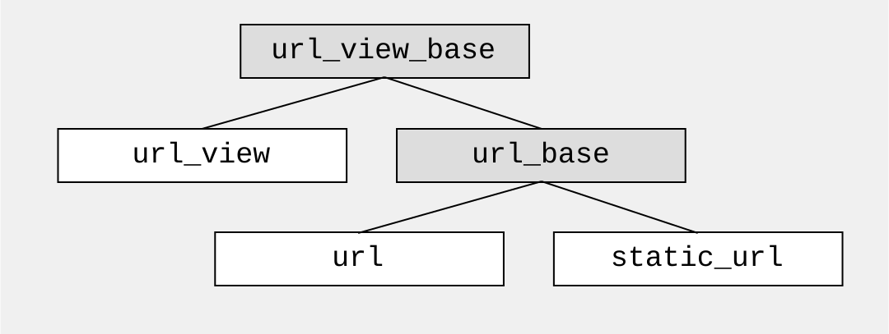
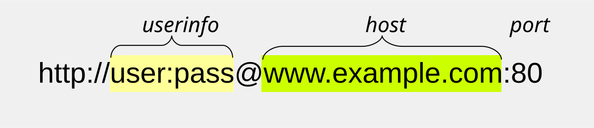

组件
容器
本库提供三个容器用于操作 URL:
| 名称 | 说明 |
|---|---|
有效且可修改的 URL, 通过动态内存分配来存储字符缓冲区. |
|
对包含有效 URL 的字符缓冲区的只读引用. 该视图不保留底层字符缓冲区的所有权, 而是由调用方管理. |
|
有效且可修改的 URL, 把字符缓冲区存储在类自身内部. 这是一个类模板, 最大缓冲区大小是非类型模板参数. |
通过继承提供观察器和修改器公有成员: 类 url_view_base 拥有全部观察器, 类 url_base 拥有全部修改器. 这些成员虽为公有, 但这些基类只能由本库按实现需要来构造. 类层次结构如下:

在整个文档中 (尤其在下面) , 讨论观察器时, 它适用于上表所示的三个派生容器; 讨论修改器时, 它与容器 url 和 static_url 相关. 接下来的表格和说明描述可用的观察器与修改器, 并附有关于重要行为或特殊要求的注释.
方案
最重要的部分是 方案, 其产生式规则为:
scheme = ALPHA *( ALPHA / DIGIT / "+" / "-" / "." )方案在一些非正式文本中被错误地称为 "协议", 它定义了 URL 其余部分的解释方式. 公共方案由 互联网号码分配局 (IANA) 注册和管理. 以下是一些已注册方案及其对应规范:
| 方案 | 规范 |
|---|---|
http |
|
magnet |
|
mailto |
|
payto |
|
telnet |
|
urn |
私有方案也是可行的, 由组织自行定义, 用于枚举文档或物理设备等内部资源, 或便于其软件的运行. 它们不受与已注册方案同等的严格约束; 组织可以开发和修改它们以满足特定需求, 较少关注互操作性或向后兼容性. 注意, 私有并不意味着保密; 一些私有方案 (如 Amazon 的 "s3") 拥有公开可得的规范且相当流行. 以下是一些示例:
| 方案 | 规范 |
|---|---|
app |
|
odbc |
|
slack |
在某些情况下, 方案由上下文隐含, 因此被省略. 以下是对目标 URL "/index.htm" 的完整 HTTP/1.1 GET 请求:
GET /index.htm HTTP/1.1
Host: www.example.com
Accept: text/html
User-Agent: Beast这里隐含了 "http" 方案, 因为上下文本身就是 HTTP 请求. 上述请求中 URL 的产生式规则称为 origin-form, 由 HTTP 规范 定义如下:
origin-form = absolute-path [ "?" query ]
absolute-path = 1*( "/" segment )|
所有 URL 都有方案, 无论它是显式还是隐式的. 方案决定了 URL 其余部分的含义. |
下面是更多使用各种方案的 URL 示例 (以及一个不是 URL 的例子) :
| URL | 注释 |
|---|---|
|
带 |
|
带 |
|
带 |
|
带 |
|
URL 引用. 缺少方案和权威组件. |
|
协议相对链接 (PRL) . 不是 URL. |
API 参考
方案表示为不区分大小写的字符串, 并附带一个枚举常量, 当字符串匹配 http、https、ws、wss、file 和 ftp 等知名方案之一时充当数字标识符. 方案中的字符永不转义; 只允许字母和数字, 且第一个字符必须是字母.
以下成员用于检查和修改方案:
| 函数 | 返回类型 | 说明 |
|---|---|---|
若存在方案则返回 |
||
以字符串形式返回方案; 若无方案则返回空字符串. |
||
以枚举常量形式返回方案; 若方案不是知名方案之一则返回值 |
| 函数 | 参数 | 说明 |
|---|---|---|
把方案设置为字符串. |
||
把方案设置为知名方案常量. |
||
移除方案 (如存在) . 包括末尾的冒号 (":") . |
|
一些包管理器 (pip、npm) 和工具使用复合方案, 如 这是一种非正式约定, 并非 URL 标准. 参见 WHATWG 讨论. |
权威组件
权威组件决定资源如何被访问. 它包含两部分: 持有身份凭证的 userinfo, 以及 主机 和 端口——二者标识一个通信端点, 该端点对 URL 其余部分所描述的资源拥有支配权. 以下是权威组件部分的 ABNF 规范:
authority = [ user [ ":" password ] "@" ] host [ ":" port ]用户名和可选密码的组合称为 userinfo.

几点说明:
-
密码字段已弃用.
-
权威组件始终有一个已定义的主机字段, 即使为空.
-
主机可以是名称, 或 IPv4、IPv6 或 IPvFuture 地址.
-
除端口字段外, 其余字段都使用百分号编码来转义分隔符.
主机子组件表示资源所在的位置.
|
注意, 如果存在权威组件, 主机总是有定义的, 即使它是空字符串 (对应 BNF 中零长度的 reg-name) . |
权威组件还影响我们应如何解释 URL 路径. 如果存在权威组件, 路径组件必须为空或以斜杠开头.
|
尽管规范允许 不建议通过 URL 传输密码数据, 除非它是表示无密码的空字符串. |
API 参考
权威组件是一个可选部分, 其存在由紧跟方案之后的未转义双斜杠 ("//") 指示; 若无方案, 则由开头指示. 它包含三个组件: 可选的 userinfo、主机和可选的端口.
空权威组件 (对应零长度的主机组件) 与不存在权威组件是两回事. 以下成员用于把权威组件作为整体字符串进行检查和修改:
| 函数 | 返回类型 | 说明 |
|---|---|---|
若存在权威组件则返回 |
||
以解码字符串形式返回权威组件. |
||
以只读视图形式返回权威组件. |
| 函数 | 参数 | 说明 |
|---|---|---|
把权威组件设置为该字符串, 其中可含百分号转义. 保留字符会自动进行百分号转义. |
||
移除权威组件 (如存在) . 包括开头的双斜杠 ("//") . |
接下来的段落和表格描述如何操作权威组件的各个部分.
userinfo
权威组件可以有可选的 userinfo, 由用户名和可选密码组成. userinfo 的存在由其后的未转义 at 符号 ("@") 指示. 密码 (如存在) 以未转义冒号 (":") 为前缀. 空密码字符串与没有密码是两回事. 下表展示各种带 userinfo 的 URL 及对应的用户名和密码:
| URL | 用户名 | 密码 | 注释 |
|---|---|---|---|
|
"user" |
"pass" |
用户名和密码 |
|
"" |
空用户名, 无密码 |
|
|
"user" |
无密码 |
|
|
"user" |
"" |
空密码 |
|
"" |
"pass" |
空用户名 |
|
"" |
"" |
空用户名和密码 |
|
尽管规范允许 username:password 格式, 但密码组件已弃用, 应尽量避免使用, 否则也应谨慎使用. 不建议通过 URL 传输密码数据, 除非它是表示无密码的空字符串. |
以下成员用于检查和修改 userinfo:
| 函数 | 返回类型 | 说明 |
|---|---|---|
若存在 userinfo 则返回 |
||
若存在密码则返回 |
||
以解码字符串形式返回用户名. |
||
以解码字符串形式返回密码. |
||
以解码字符串形式返回 userinfo. |
||
返回用户名. |
||
返回密码; 若无密码则返回空字符串. |
||
返回 userinfo. |
| 函数 | 参数 | 说明 |
|---|---|---|
把用户名设置为该字符串. 保留字符会自动进行百分号转义. |
||
把密码设置为该字符串. 保留字符会自动进行百分号转义. |
||
把 userinfo 设置为该字符串. 保留字符会自动进行百分号转义. |
||
把用户名设置为该字符串, 其中可含百分号转义. 保留字符会自动进行百分号转义. |
||
把密码设置为该字符串, 其中可含百分号转义. 保留字符会自动进行百分号转义. |
||
把 userinfo 设置为该字符串, 其中可含百分号转义. 保留字符会自动进行百分号转义. |
||
移除密码 (如存在) . 包括密码分隔冒号 (":") . |
||
移除 userinfo (如存在) . 包括用户名与密码分隔冒号 (":") 以及末尾的 at 符号 ("@") . |
主机
权威组件的主机部分是一个字符串, 根据内容可以是主机名、IPv4 地址、IPv6 地址或 IPvFuture 地址. 如果存在权威组件, 主机总是有定义的, 即使最终的主机字符串长度为零.
以下成员用于检查和修改主机:
| 函数 | 返回类型 | 说明 |
|---|---|---|
返回主机类型枚举常量. 若无权威组件, 则返回值 |
||
以解码字符串形式返回主机; 若无权威组件则返回空字符串. |
||
以解码字符串形式返回主机. 若主机类型为 |
||
以解码字符串形式返回主机名; 若主机类型不是 |
||
以 |
||
以 |
||
若主机类型为 |
||
返回主机; 若无权威组件则返回空字符串. 若主机类型为 |
||
返回主机. 若主机类型为 |
||
以字符串形式返回主机名. 若主机类型不是 |
| 函数 | 参数 | 说明 |
|---|---|---|
根据内容把主机设置为该字符串. 如果字符串是有效的 IPv4 地址、括号括起的有效 IPv6 地址或括号括起的有效 IPvFuture 地址, 则得到的主机类型分别为 |
||
根据内容把主机设置为该字符串. 如果字符串是有效的 IPv4 地址、有效的 IPv6 地址或有效的 IPvFuture 地址, 则得到的主机类型分别为 |
||
把主机设置为该 IPv4 地址. 主机类型为 |
||
把主机设置为该 IPv6 地址. 主机类型为 |
||
把主机设置为该 IPvFuture 地址, 其中不应包含方括号. 主机类型为 |
||
把主机设置为该字符串. 所有保留字符都会自动进行百分号转义. 主机类型为 |
||
根据内容把主机设置为该字符串. 如果字符串是有效的 IPv4 地址、括号括起的有效 IPv6 地址或括号括起的有效 IPvFuture 地址, 则得到的主机类型分别为 |
||
根据内容把主机设置为该字符串. 如果字符串是有效的 IPv4 地址、有效的 IPv6 地址或有效的 IPvFuture 地址, 则得到的主机类型分别为 |
||
把主机设置为该字符串, 其中可含百分号转义. 所有保留字符都会自动进行百分号转义. 主机类型为 |
端口
端口是一个数字字符串, 长度可能为零. 端口的存在由主机和 userinfo 之后出现的前缀冒号 (":") 指示. 零长度的端口字符串与不存在端口是两回事. 本库同时用十进制字符串和无符号 16 位整数表示端口. 如果字符串的数值超出整数范围, 则映射为数字零.
以下成员用于检查和修改端口:
| 函数 | 返回类型 | 说明 |
|---|---|---|
若存在端口则返回 |
||
以字符串形式返回端口; 若无端口则返回空字符串. |
||
以无符号整数形式返回端口. 如果数值大于 65535, 则返回零. |
| 函数 | 参数 | 说明 |
|---|---|---|
把端口设置为字符串. 如果字符串包含任何非数字字符, 则抛出异常. |
||
把端口设置为数字. |
||
移除端口 (如存在) . 这不会移除权威组件. |
路径
根据方案不同, 路径可以作为字符串处理, 也可以作为由未转义正斜杠 ("/") 分隔的、具有层次结构的段序列处理. 每个 URL 都 始终 定义了路径, 即使它是空字符串.
以下成员用于检查和修改路径:
| 函数 | 返回类型 | 说明 |
|---|---|---|
若路径以正斜杠 ("/") 开头则返回 |
||
|
以解码字符串形式返回路径. |
|
返回路径. |
||
以解码段的范围形式返回路径. |
||
以段的范围形式返回路径. |
| 函数 | 参数 | 说明 |
|---|---|---|
把路径设置为该字符串. 保留字符会自动进行百分号转义. |
||
设置路径是否为绝对路径. |
||
把路径设置为该字符串, 其中可含百分号转义. 保留字符会自动进行百分号转义. |
||
以可修改的解码段范围形式返回路径. |
||
以可修改的段范围形式返回路径. |
基于段的容器 segments_view、segments_ref、segments_encoded_view 和 segments_encoded_ref 将在后面的章节讨论.
查询
根据方案不同, 查询可以作为字符串处理, 也可以作为由未转义 and 符号 ("&") 分隔的、结构化的键值对 (称为 "params") 序列处理. 查询是可选的; 空查询字符串与没有查询是两回事.
以下成员用于检查和修改查询:
| 函数 | 返回类型 | 说明 |
|---|---|---|
若存在查询则返回 |
||
以解码字符串形式返回查询. |
||
返回查询. |
||
以解码参数的只读范围形式返回查询. |
||
以参数的只读范围形式返回查询. |
| 函数 | 参数 | 说明 |
|---|---|---|
把查询设置为字符串. 保留字符会自动进行百分号转义. |
||
把查询设置为字符串, 其中可含百分号转义. 保留字符会自动进行百分号转义. |
||
以解码参数的可修改范围形式返回查询. |
||
以参数的可修改范围形式返回查询. |
||
移除查询. 如果存在开头问号 ("?") , 也会一并移除. |
基于参数的容器 params_view、params_ref、params_encoded_view 和 params_encoded_ref 将在后面的章节讨论.
片段
片段按字符串处理; 其内容没有通用的结构化解释.
以下成员用于检查和修改片段:
| 函数 | 返回类型 | 说明 |
|---|---|---|
若存在片段则返回 |
||
以解码字符串形式返回片段. |
||
返回片段. |
| 函数 | 参数 | 说明 |
|---|---|---|
把片段设置为该字符串. 保留字符会自动进行百分号转义. |
||
把片段设置为该字符串, 其中可含百分号转义. 保留字符会自动进行百分号转义. |
||
移除片段. 如果存在开头井号 ("#") , 也会一并移除. |